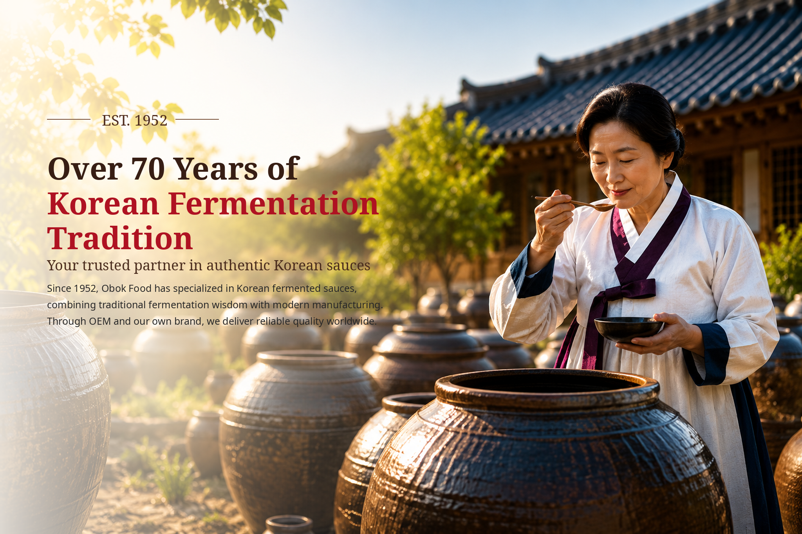

01
Brewed Soy Sauce
Balanced aroma and savory flavor for food service, retail and OEM development.
KOREAN BREWED SOY SAUCE
 BUSAN · KOREA
BUSAN · KOREAABOUT OBOK
With more than seven decades of sauce-making experience, OBOK combines traditional fermentation know-how with modern food technology. We develop and manufacture soy sauce, gochujang, doenjang and a wide range of sauces for international partners.
PRODUCT CENTER
From traditional Korean fermented sauces to products customized for global markets, OBOK offers flexible product development and manufacturing solutions.
Balanced aroma and savory flavor for food service, retail and OEM development.
KOREAN BREWED SOY SAUCE
A balanced blend of sweetness, heat and umami for rice, barbecue and sauce applications.
GOCHUJANG
Deep soybean fermentation flavor for soups, stews and seasoning products.
DOENJANG
Ideal for Korean-style black bean noodles and diverse food-service recipes.
CHUNJANG
Sweet, savory and gently spicy; ideal for barbecue, lettuce wraps and dipping.
SSAMJANG
MANUFACTURING STRENGTH
Dedicated fermentation and storage facilities, standardized processes and an experienced team support consistent quality and reliable delivery.
FOOD SERVICE & BULK
We supply professional and bulk formats for food service, industrial use and overseas distribution. Packaging and specifications can be discussed for each market.

BULK SUPPLY
We supply professional and bulk formats for food service, industrial use and overseas distribution. Packaging and specifications can be discussed for each market.
 14 kg Gochujang Pail
14 kg Gochujang Pail 14 kg Doenjang Pail
14 kg Doenjang Pail 14 kg Traditional DoenjangOEM / PRIVATE LABEL
14 kg Traditional DoenjangOEM / PRIVATE LABELPREMIUM GIFT COLLECTION
Premium soy sauce gift sets for seasonal campaigns, corporate gifting and overseas retail programs. Product composition and packaging can be customized.


OEM & PRIVATE LABEL
We support product planning, sample development, quotation, production and export delivery based on your target market, flavor and packaging needs.
Product, market, size and target price.
Flavor and recipe adjustment.
MOQ, packaging, lead time and terms.
Manufacturing and quality control.
Documents, shipping and follow-up.
QUALITY & FACTORY
Systematic sanitation management and critical-process control help maintain consistent quality from incoming ingredients to finished-product shipment.
 HACCP CERTIFIED PRODUCTS
HACCP CERTIFIED PRODUCTSOUR FERMENTATION PHILOSOPHY
Though times have changed, our commitment has not.
We continue to honor Korea’s traditional fermentation principles
with patience, care and respect for nature.
O’BOK FOODS BRAND FILM
Discover the values, production standards and craftsmanship behind O’BOK Foods.
CONTACT US
Send us your product type, target size, quantity and destination market.